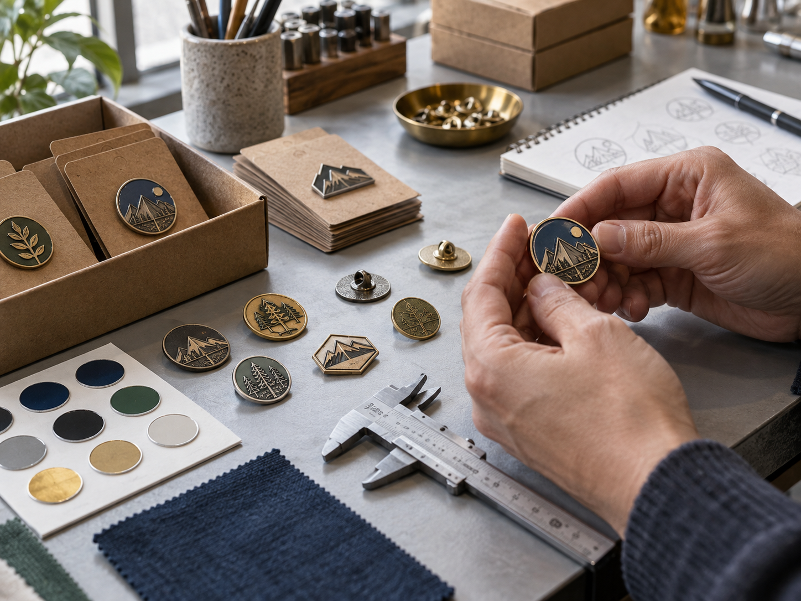

Promotional products are no longer judged only by how many people receive them. In 2026, recipients and procurement teams increasingly ask whether a branded item is useful, well designed, durable and aligned with the brand's values. That shift creates a strong opportunity for custom metal badges, pins, name badges and related metal products.
For a brand manager or distributor, the question is no longer only “What logo should go on the item?” It is “Why will someone keep it, wear it or use it?” The answer affects the metal, size, finish, personalization, backing, packaging and even whether the product should include a QR code.
The four promotional products trends shaping 2026
1. Better products are replacing forgettable giveaways
PPAI's Product Power 2026 consumer research found that promotional products are increasingly connected to personal relevance, design appeal and brand emotion. The study reports that 83% of respondents feel appreciated when they receive a promotional product, 90% say it improves their perception of the brand, and 65% are very likely to keep a branded product for six months or longer.
The practical lesson is simple: durability and design are part of the marketing result. A custom metal badge with clean relief, a comfortable backing and a finish that suits the brand can keep working after the event ends. It can also become a visual marker of membership for a team, customer community, conference or creator brand.
Start with the use case rather than the decoration. Review the custom metal badges guide before deciding whether a die struck badge, soft enamel badge, hard enamel pin or dimensional zinc alloy design fits the project.
2. Personalization is moving from novelty to identity
Personalization can mean a person's name, a role, a member number, a location, a limited-edition mark or a small design variation for different teams. For some programs it is functional; for others it helps recipients feel that the item belongs to them.
Custom metal badges are well suited to identity-led programs because the design can combine a consistent brand outline with controlled variations. A hospitality team may need individual staff names. A club may want a yearly edition. A conference organizer may want different tracks or speaker categories. A brand community may create a small series that encourages collecting and trading.
When requesting a quote, separate fixed artwork from variable data. Send the master design, list of names or numbers, required font, size of each variable field and approval process. If the product is mainly for uniforms, compare brushed metal name badges and custom staff name badges with a decorative lapel badge.
3. Sustainability is becoming a procurement question
Sustainability claims now need more than a green color or a vague “eco-friendly” label. PPAI's 2026 research says 76% of consumers report that sustainability influences whether they keep or use a product, while more than 62% prefer recycled or eco-friendly materials. APPA's August 2026 survey found that 55.8% of respondents consider sustainability and ethical sourcing important or extremely important when buying branded merchandise, and 52.2% are willing to pay a small premium of up to 10% for a more sustainable or ethically sourced product.
For metal badge buyers, the strongest response is practical:
- Choose a product intended for repeated use, not a one-day giveaway.
- Ask what metal, plating, enamel and packaging options are available.
- Reduce unnecessary plastic around the badge and use packaging that matches the program.
- Request material, testing or origin documentation when the buyer's market requires it.
- Avoid unsupported environmental claims and describe what can actually be verified.
The gold, silver and antique plating guide can help buyers choose a finish that stays visually relevant beyond a single campaign. Include packaging and documentation requirements in the first quote request rather than adding them after sampling.

4. Physical products are becoming connected touchpoints
GS1 is working toward broad adoption of 2D barcodes, including QR Codes powered by GS1 Digital Link, by 2027. These codes can support richer product information, traceability, inventory workflows, recall management and brand-controlled digital experiences.
That trend does not mean every decorative badge needs a QR code. A small event badge with a visible code may feel crowded and may not have a useful destination after the event. A serialized asset tag, equipment nameplate or product identification plate is a better fit when the goal is scanning, service information or traceability.
Use a QR code on a metal product when the use case is clear:
- Asset identification: connect a machine, tool or equipment item to service records.
- Product information: provide a digital manual, origin details or updated specifications.
- Membership or access: connect a durable badge to a controlled digital record where appropriate.
- Event follow-up: route a credential to an agenda, community page or post-event resource.
For functional identification, see custom QR code metal tags and equipment nameplates. For decorative branding, keep the badge artwork readable and treat the QR element as an information layer, not trend decoration.
What the trends mean for a custom metal badge specification
What will make the item worth keeping?
Choose a size, weight and finish that feel intentional for the recipient. Raised relief can make a simple logo more tactile. Antique plating can improve contrast in recessed areas. A polished finish can support a premium retail or award program, while a brushed finish may suit a professional uniform.
How will people wear or install it?
The attachment affects comfort and perceived quality. Butterfly clutches are common for lightweight lapel pins. Magnetic backs can protect uniforms from holes. Safety pins, screw posts or adhesive backs may be better for larger badges, bags or hard goods. Compare the available metal pin backing types before approving the sample.
Which details must stay consistent across a batch?
Confirm the outside shape, relief depth, color borders, plating, thickness and back position. If the order contains variable names or numbers, define the data format and inspection method before production. Consistency is especially important when a badge is part of an onboarding, recognition or membership program.
What evidence will the buyer need?
Ask early about material descriptions, finish samples, packaging, testing and any documentation needed for the destination market. The right evidence depends on the product and application, so agree on it during quotation rather than assuming it can be added later.
Is the product decorative or functional?
Decorative badges are designed around visibility, comfort and identity. Functional tags are designed around readable data, scanning, mounting and service life. A custom logo metal badge and a QR equipment tag may both be metal, but they should not be briefed or inspected in the same way.
A practical quote checklist for 2026 programs
Send these details to a metal badge manufacturer:
- Application: event, uniform, membership, retail, award, equipment or packaging.
- Artwork: logo files, color references and any required relief or cutout.
- Size and thickness: target dimensions, weight expectations and wearing space.
- Quantity: pieces per design, number of variations and expected reorder volume.
- Finish: polished, brushed, antique, black nickel, gold-tone, silver-tone or another reference.
- Color: soft enamel, hard enamel, print, recessed fill or no color.
- Attachment: clutch, magnet, safety pin, screw post, adhesive or custom mounting.
- Packaging: individual bags, backing cards, boxes, cartons and plastic-reduction requirements.
- Variable data: names, numbers, QR codes, serial fields or other personalization.
- Timing: sample deadline, approval date, delivery date and destination country.
The custom metal badge pricing guide explains the cost factors that most often change a quote, including tooling, quantity, size, finish, color, backing and packing.
Final takeaway
The biggest promotional products trend in 2026 is not a single color, shape or decoration. It is a higher standard for physical brand items. People are more likely to keep products that are useful, durable, attractive and aligned with their values. Buyers are also asking more precise questions about personalization, packaging, documentation and digital connections.
For brands and distributors, custom metal badges work best when they are designed as part of the recipient's experience—not added as an afterthought. Start with the purpose, choose the process and attachment around that purpose, and request a sample that represents the real production specification. Then request a quote with the artwork, dimensions, quantity, finish, backing and packaging details ready for review.
Sources and further reading
This article uses current industry research as trend context: PPAI Product Power 2026, PPAI's 2026 trend report, APPA sustainability research and GS1's 2D barcode transition guidance. Statistics and standards should be reviewed again if this page is substantially updated.